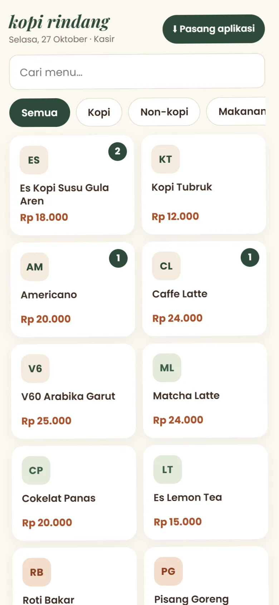
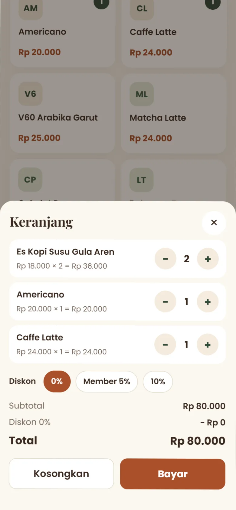
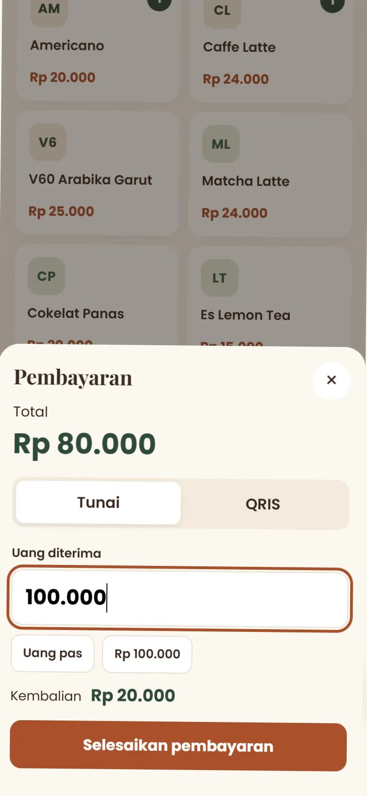
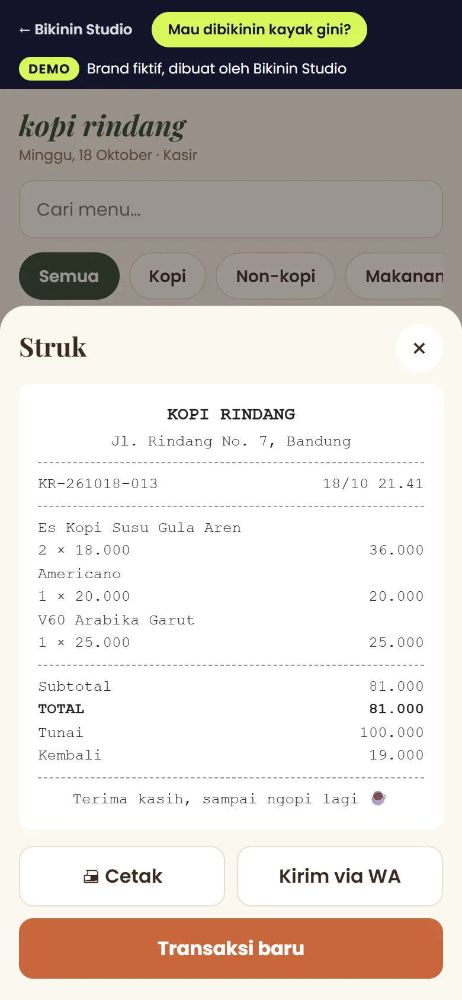
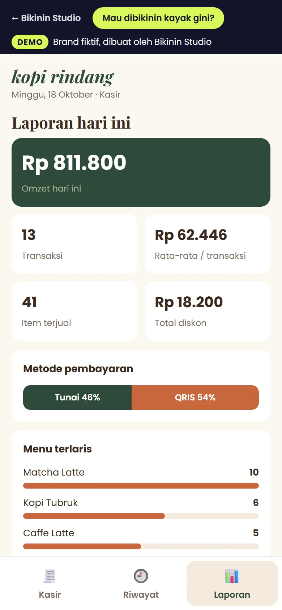

Studi kasus · proyek konsep, brand fiktif
Aplikasi kasir Kopi Rindang: dari buku catatan ke ponsel
Kopi Rindang adalah brand fiktif. Aplikasinya benar-benar berjalan dan dapat Anda coba sekarang dari ponsel. Berikut alasan di balik setiap fiturnya.
Menghitung omzet setiap malam dengan kalkulator
Bayangkan kedai kecil yang masih mencatat pesanan di buku. Setiap tutup toko, pemiliknya menghitung ulang omzet, mencocokkan uang di laci, dan menebak menu mana yang paling laku.
Mesin kasir mahal dan rumit. Yang dibutuhkan hanyalah aplikasi di ponsel: cepat digunakan saat antrean ramai, dan laporannya langsung tersedia.

Sentuh menu, jumlah bertambah otomatis
Menu dikelompokkan per kategori dan dapat dicari. Setiap sentuhan menambah jumlah, dan total sementara selalu terlihat di bawah. Tombolnya dibuat besar agar mudah ditekan dengan ibu jari.

Diskon member, tunai atau QRIS
Di keranjang, jumlah dapat diubah dan diskon member tinggal dipilih. Untuk pembayaran tunai tersedia tombol nominal cepat dengan kembalian otomatis. Untuk QRIS, kode QR langsung ditampilkan.


Struk dicetak atau dikirim melalui WhatsApp
Struk memuat nomor transaksi, rincian, dan kembalian. Struk dapat dicetak ke printer Bluetooth atau dikirim ke WhatsApp pembeli untuk menghemat kertas.

Omzet, menu terlaris, dan jam ramai
Laporan harian tersusun otomatis: omzet, jumlah transaksi, rata-rata belanja, perbandingan tunai dan QRIS, menu terlaris, hingga jam paling ramai. Bahan untuk menentukan promo dan stok keesokan harinya.
Aplikasi dapat dipasang di ponsel dan tetap berjalan saat sinyal terputus.
Aplikasi sederhana serupa: mulai Rp 3jt
Coba aplikasi kasirnya →
Membutuhkan aplikasi untuk usaha Anda?
Kasir, booking, atau katalog. Fiturnya kami sesuaikan dengan alur kerja usaha Anda. Konsultasi tanpa biaya.
- Aplikasi sederhanamulai Rp 3jt
- Landing pagemulai Rp 400rb
- Toko onlinemulai Rp 2jt